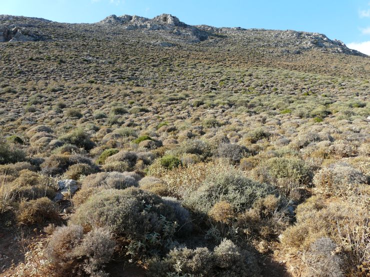

<p class="style8"></p>


<table align="center" style="width: 900px">
	   
    <tr>
        <td class="style9" >
		 </td>
    </tr>
        
    <tr>
        <td class="style9"><span class="style9">entre Gerakari et Spili</span><span class="style9"> 09 juillet 
		2006</span></td>
	</tr>

       
    <tr>
        <td class="style9" >
		 </td>
    </tr>
        
    <tr>
        <td class="style9"><span class="style9">Preveli</span><span class="style9"> 22 septembre 2009</span></td>
	</tr>
     </table>

